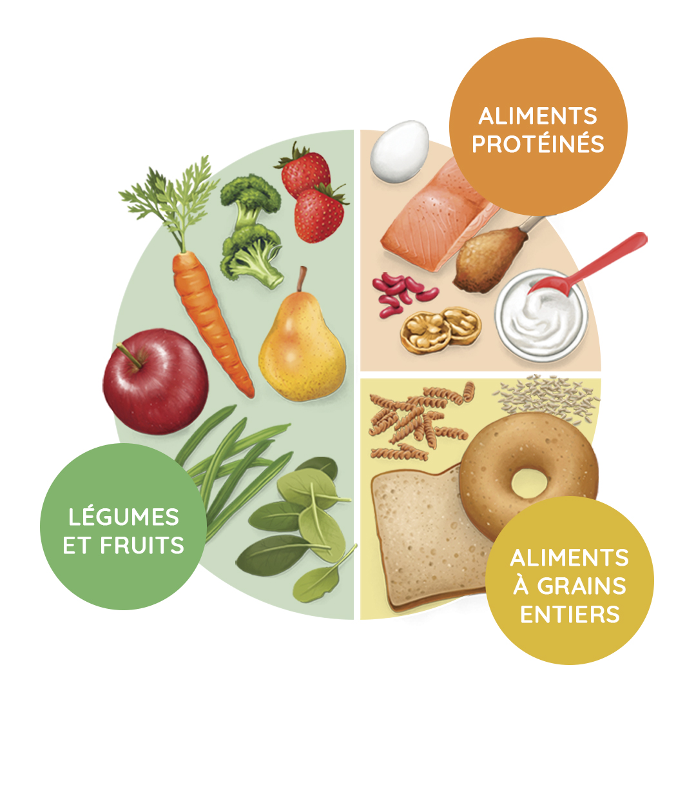

Bons aliments
Céréales complètes, fruits, légumes, protéines, noix et produits laitiers selon les besoins.
Alimentation équilibrée
Une bonne alimentation n’a pas besoin d’être compliquée. L’objectif est d’avoir une énergie stable pour les cours, les travaux et les déplacements.
Passer à l'organisation
Les repas réguliers améliorent la concentration et l’endurance.
Repères alimentaires
Le but n’est pas d’être parfait. Il faut surtout construire un rythme qui tient dans la vraie vie étudiante.
Céréales complètes, fruits, légumes, protéines, noix et produits laitiers selon les besoins.
Boire régulièrement, surtout pendant les longues journées de cours et de déplacement.
Petit-déjeuner nourrissant, déjeuner complet, collation légère et dîner facile à digérer.
 # Energie
# Energie # Routine
# Routine # Support
# Support